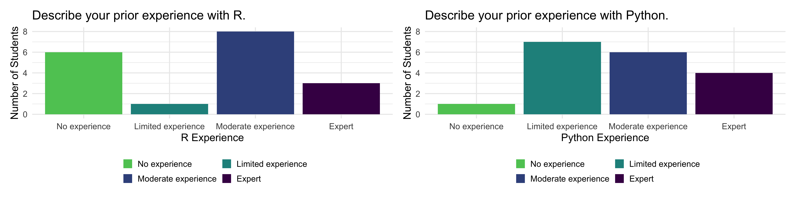
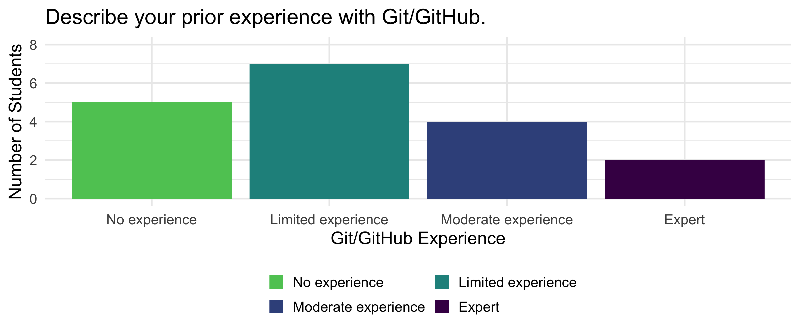
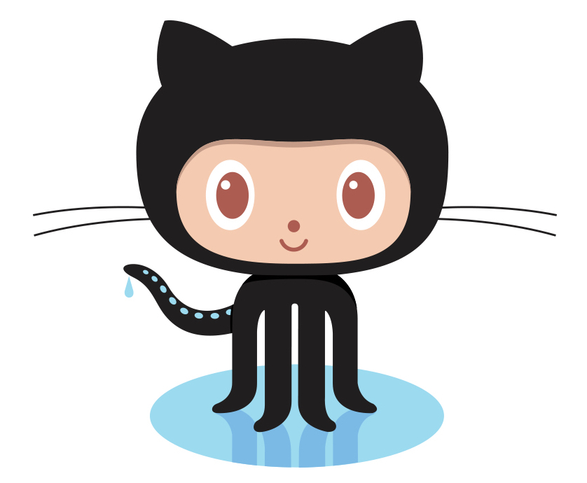
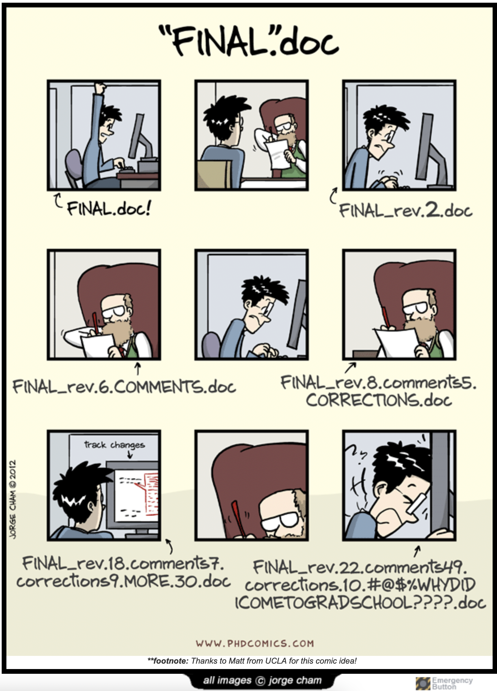

Workflow
Kelly McConville
DATA/MATH 306
Week 1 | Fall 2025
Go in your email and make sure you joined:
- The Bucknell-DATA-306-F25 GitHub Organization
- These individual repositories:
work-usernameclass-siteprojectname
Load this slide deck on your computer.
- You can access it in the Schedule page of the
class-siterepository.
Looking Ahead to Week 2
(By Sept 1st at 10pm) Readings:
- Communicating with Data Chs 1.1 - 1.5
- Wilson et al (2017)
(By Sept 1st at 10pm) Reading reflections submitted to Gradescope.
- Reflection templates: Quarto Document and PDF Document
(By Sept 4th 10am) CITI Training due on Gradescope.
Start the week 3 readings!
- Will help you get acquainted with your projects.
Goals for Today
Best practices for data work discussion
Workflow:
- Positon
- Git/GitHub
How to Get Help
Project team members
Slack #q-and-a channel
My office hours: Tuesdays 2-3pm and Wednesdays 1-2pm
- Sign-up for 20 minute sessions: burl.live/meeting
Data science office hours: Sundays - Thursdays
- Drop-in
- Schedule: burl.live/help-f25
Stakeholder mentor
Discussion
Kass et al (2016): Ten Simple Rules for Effective Statitsical Practice
Discussion leaders by rule in Schedule
Project Groups
Can find your group assignments here
Time to learn about and install Positron
Why Positron?
Demo of Interacting with Positron
DATA 306 git Experience

It takes some time to get comfortable with git. We have time.
Use office hours if you get stuck on any of the steps today!
git and GitHub
- git: Version control system
- Think fancier type of Track Changes.
- GitHub: Hosting service for git projects (which are called repositories)
- Think fancier type of DropBox or Google Drive.
- Useful resource when getting started: https://happygitwithr.com/

Manual Version Control
- But I already do version control…
- draft.Rmd, draft2.Rmd, final.Rmd, realFinal.Rmd, REALLYVERYREALFinal.Rmd…
- Issues with this version of version control:
- Hard to know how these files relate.
- Hard to extend this approach to working with others.

Git Real
- Git is a decentralized version control system.
- Each collaborator has a complete version of the repo.
- Everyone can work offline and simultaneously.
- GitHub holds the master copy.
- git is not friendly and can be frustrating.
- BUT, the version control and collaborative rewards are big!
- GitHub.com is a great place to develop an online presence.
- In DATA 306, we will default to keeping the work private.
A Hot Mess is Okay
- If you end up with a mess of errors, then don’t worry but come see one of the instructors for help.
- It happens to everyone.
A Github Repo = Project/Folder on Your Computer
A repo, short for repository, is the folder that contains all of the files for the project on GitHub.com.
Under the Bucknell-DATA306-F25 GitHub Organization you will have access to 3 repos:
work-username: Just you and I can accessclass-site: The whole class can accessprojectname: Your team, stakeholder (possibly), and I can access
For each repo, you should sync with a folder on your computer.
- We will all do this together for
work-usernametoday.
- We will all do this together for
Steps to Get Started
Once-Per-Computer/Server:
Install git on your computer.
Get your local git talking to GitHub.
Once-Per-Project:
- Create a repo on GitHub.
- I did this step for us.
- Create a version controlled Project that is synced with the GitHub repo.
Let’s try to set this up!
Git via Positron + R
- So that the workflow is the same for everyone:
- Open Positron.
- Start an R session.
- You will be able to toggle to Python after we have synced with GitHub.
Check if git is install on your computer
In Terminal, type
- If you receive an answer, then git is already install! 🎉
- If the reply is
git: command not found(or similar), then- Windows: Visit https://gitforwindows.org/
- Macs: In the Terminal type
- Restart your session.
Introduce Yourself to Git
Install the packages usethis and gitcreds:
In your R console, modify and run the following code to introduce yourself to git
Personal Access Token Time
- To interact with GitHub, you need to include credentials.
- Personal Access Token (PAT)
- In your R console, run
Should take you to GitHub.
Select “repo”, “user”, and “workflow” for the scopes.
Click “Generate token”.
Store it by running the following in the R Console:
Sync GitHub.com repo and a Project
In your repo on GitHub.com:
- Click on the green clone or download button.
- Copy the given url for “Clone with HTTPS”.
In Positron:
In the Welcome pane, select “New from Git…”
Paste in the url.
Select “Browse…” and select a logical place on your computer for the repository folder.
Hit the “OK” button.
Workflow
Once your GitHub repo and RStudio project are synced, here’s your workflow:
On the left menu, select “Source Control”.
Under the three dots associated with “CHANGES”, select Pull.
- This will pull the most recent version of the repo from GitHub to your local folder.
Do some work on your project and save it.
In the “Source Control”, select the “+” (stage changes) button.
Include a quick note, Commit Message to summarize the motivation for the changes.
Select Commit & Push to send your work to GitHub.
Workflow Demo
Test the waters: Let’s go through the workflow.
- Pull. (Yes, there is nothing to pull yet but it is always good practice to start here.)
- Click on the ReadMe.
- Add something to the ReadMe.
- Stage the changes to the ReadMe.
- Put in a commit message.
- Commit & Push.
Look for updates in the ReadMe on GitHub.com.
Git Collaboration: Merge conflicts
- What if my collaborators and I both make changes?
- Scenario: Your collaborator makes changes to a file, commits, and pushes to GitHub. You also modify that file, commit and push.
- Result: Your push will fail because there’s a commit on GitHub that you don’t have.
- Usual Solution: Pull and usually git will merge their work nicely with yours. Then push. If that doesn’t work, you have a merge conflict. Let’s cross that bridge when we get there.
- Scenario: Your collaborator makes changes to a file, commits, and pushes to GitHub. You also modify that file, commit and push.
- How to avoid merge conflicts?
- Always pull when you are going to work on your project.
- Always commit and push when you are done even if you made small changes.
Reminders
(By Sept 1st at 10pm) Readings:
- Communicating with Data Chs 1.1 - 1.5
- Wilson et al (2017)
(By Sept 1st at 10pm) Reading reflections submitted to Gradescope.
- Reflection templates: Quarto Document and PDF Document
(By Sept 4th 10am) CITI Training due on Gradescope.
Start the week 3 readings!
- Will help you get acquainted with your projects.